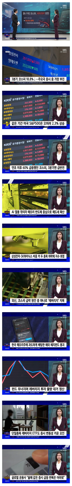

원인
단일 레버리지

원인
단일 레버리지
레버리지는 진짜 한국증권 역사상 길이길이 남을거임.. 개 병신같은
역사적인 병크
날아가는지 안날아가는지 봐야겟노 ㅋㅋ
딴건몰라도 국민연금 리밸러싱을 반년동안막은게 크지
솔직히 내생각에 단일레버리지가 트리거가 되긴 했지만
그거 없었어도 한국 개미들은 눈뒤집혀서 뭔일 내긴 했을거임ㅋㅋ
환율 틀어막으려고 레버리지 급조하고, 선거땜에 국민연금 리밸런싱 막고 이런걸 욕하는건 당연한건데
한편으론 한국 개미들이 병신인것도 어쩔수없긴함
한국인들 특유의 뜨거운 열정이 한국을 키웠지만
주식시장에선 아무 득이 안되는 특성임
부동산에서 갭투자만 하던 민족인데 별수있나 ㅋㅋ
슬슬 사야겠네
원칙이 원칙인데는 이유가 있지
응 애초에 개좆도 가치없는 병신시장이었어
단일 레버리지는 돈먹은거 아닌지 확인 안하나..
나라 망치기 쉽다 쉬워
레버리지 없애라 괜히 씨발 미국주식에도 3천제한 걸어놔서 물을 못타네